Find information#
This page explains how to find required information, such as the project ID or your authorization token.
Find project ID#
You can find the project ID in different places.
Editor: Open the project in the editor. The project ID appears in the web page URL:
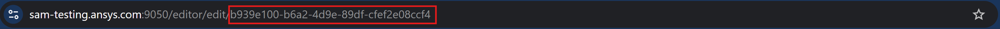
Dashboard: Open the project view page. The project ID appears in the web page URL:
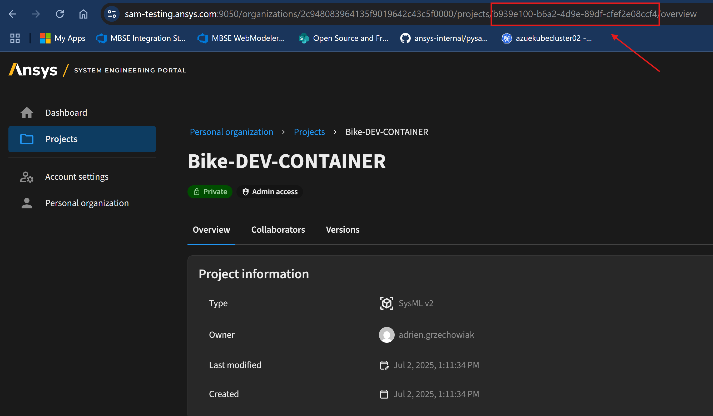
Find organization ID#
Follow these steps to find your organization ID:
Go to your dashboard.
Click your organization.
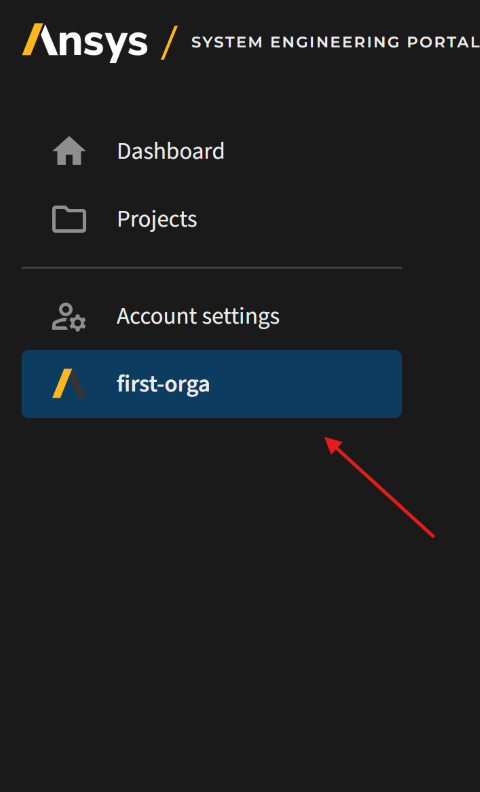
Find your organization ID in the page URL:
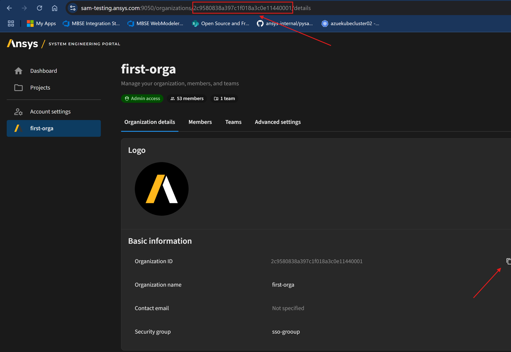
Find authentication token#
For authentication, you can either use a bearer (temporary) token for quick access or create a Personal Access Token (PAT) for longer-term use.
Bearer token#
Follow these steps to get a bearer token:
Open the SAM editor dashboard in your browser.
Press
F12to open the browser’s console.Go to the Network tab and reload the page.
Many requests appear. Search for one of these:
meorganizationsaccess-rights
Click the relevant request and go to the Headers tab.
The Authorization header shows the value of your bearer token.
Caution
Copy only the token after Bearer.
Personal Access Token (PAT)#
Creating a Personal Access Token (PAT) is the recommended method for authentication with PySAM SysML2 due to its longer validity.
New method (recommended for current servers)
Follow these steps to generate a PAT from your account settings:
Access account settings: From the main page of the SAM editor, click your account logo in the top right corner and select Account settings.
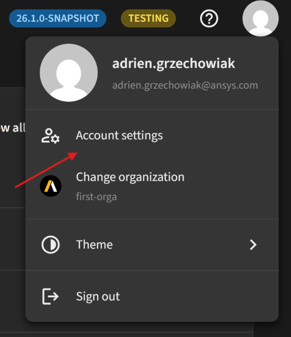
Navigate to personal access tokens: On the Account settings page, click Personal access tokens in the navigation pane.
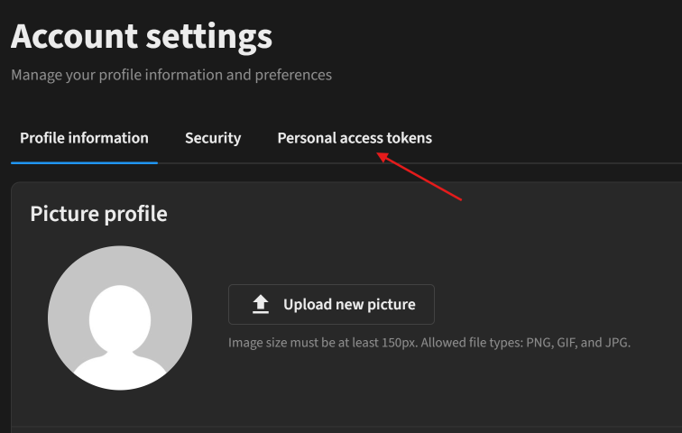
Generate new token: Click the Generate new token button.
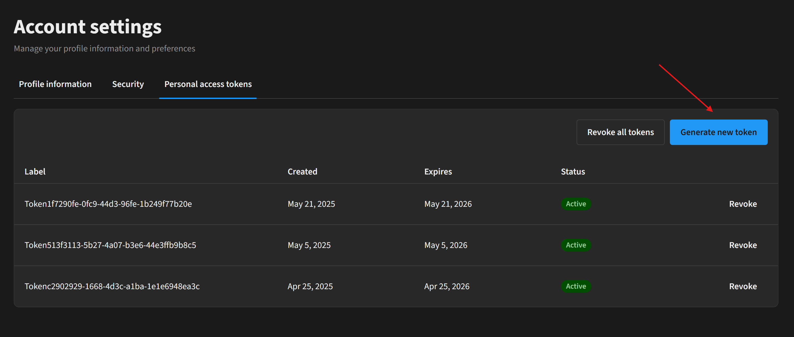
Configure token details: Enter a descriptive label for your token in the Token label field and set the expiration date. Click the Generate token button.
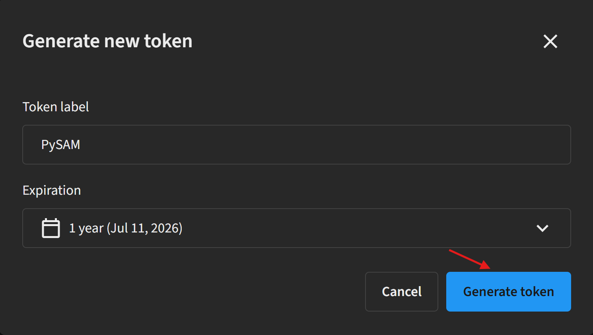
Copy generated token: When the token displays, click Copy to save it to your clipboard.
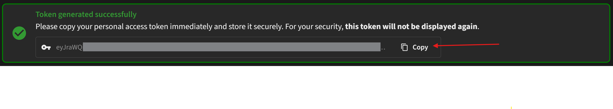
Important
Store this token in a secure location. The token is not displayed again after you leave this page. Generate a new one if needed.
Old method (for older server versions)
If you are using an older server version that does not support the direct account settings method, you can generate a PAT via the Swagger UI.
Obtain a temporary bearer token: First, get a valid bearer token. Follow the steps in the Temporary token section to retrieve it using your browser’s developer tools.
Access Swagger UI: Navigate to the Swagger UI page:
https://<SERVER-URL>/api/swagger-ui/index.htmlAuthorize with bearer token: Click the Authorize button and paste your bearer token into the authentication field.
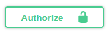
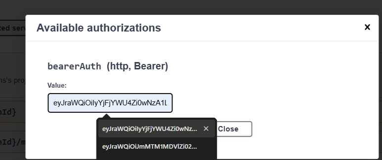
Select personal access token API: Open the Select a definition dropdown in the top right of the page. Scroll down and select Personal Access Token API.
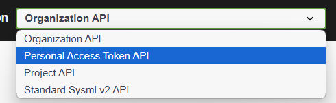
Generate PAT via POST request: Use the POST request to generate a new PAT. Optionally, define the number of days the token remains valid. The default is 30 days.
After submitting the request, the PAT appears in the response body:
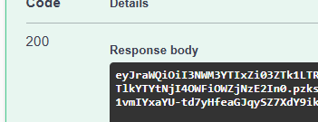
Note
Save your PAT in a secure location because it is not displayed again after you leave the page. Generate a new one if needed.
Work with diagrams